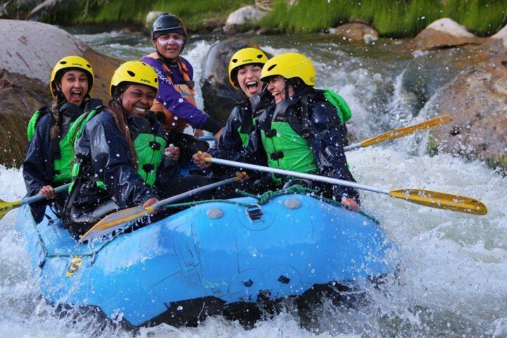
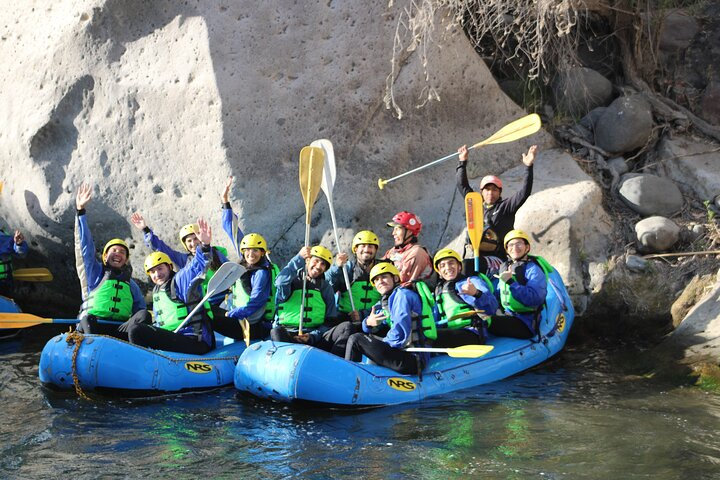

The Rapids!


The most exciting rivers of Peru are here, our company with more than 40 years of experience provides quality equipment, plus our guides are highly trained, which guarantees a unique experience, only with Peru Rafting and Treks.

Learn about how SRE got started, and where we are today.

Ready to get going? Make a reservation now!

We want to get to know you and answer all your questions.